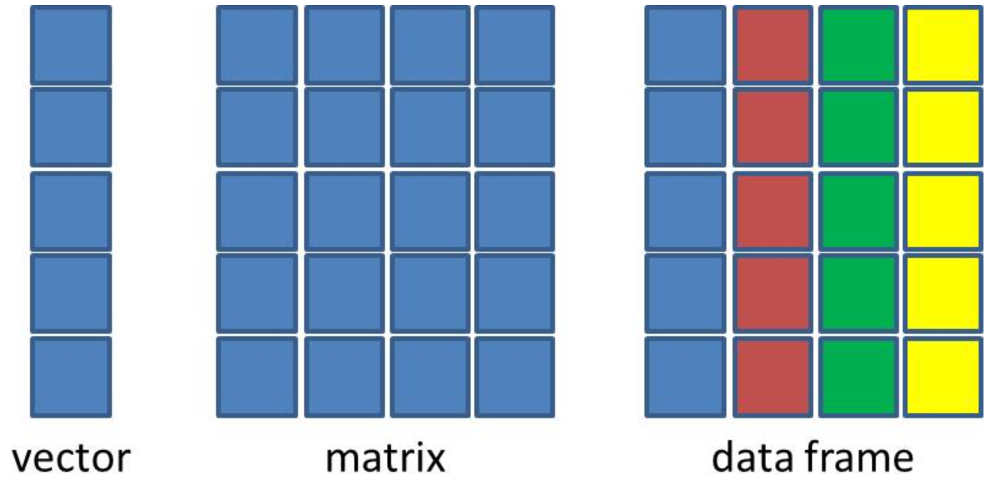

You RRR a Beginner: Data Types and Structures 👨💻
MATH 4720/MSSC 5720 Introduction to Statistics
R is a Calculator - Arithmetic Operators
- We are already equipped with the tools we need for doing statistics in this course. Now it’s time to program in R.
- We are going to go through basic R syntax and its commonly used data structures.
- Because some of you have no experience in R, this introduction is a must, because I want to make sure everyone is on the same page.
- If you are already familiar with basic R syntax, please bear with me. You can learn more advanced stuff by yourself. OK.
- First, as many other languages, R is a calculator. We can do basic arithmetic operations using R.
- To get the remainder of division, we use two percentage symbols.
- To get the quotient of division, we use percent, slash and percent symbol.
R is a Calculator - Examples
- We have to do the operation in the parenthesis first

R Does Comparisons - Logical Operators

5 <= 5[1] TRUE5 <= 4[1] FALSE# Is 5 NOT equal to 5? FALSE
5 != 5[1] FALSEBuild-in Functions
- R has lots of built-in functions, especially for mathematics, probability and statistics.

Commenting
You’ve seen comments a lot! How do we write a comment in R?
. . .
Use
#to add a comment so that the text after#is not read as an R command.Writing (good) comments is highly recommended: help readers and more importantly yourself understand what the code is doing.
Comments should explain the why, not the what.


Objects and Funtions in R
Everything that exists is an object. Everything that happens is a function call.
– John Chambers, the creator of the S programming language.
We have made lots of things happened!
Even arithmetic and logical operators are functions!
`+`(x = 2, y = 3)[1] 5`&`(TRUE, FALSE)[1] FALSECreating Variables
A variable stores a value that can be changed according to our need.
Use
<-operator to assign a value to the variable. (Highly recommended👍)
x <- 5 ## we create an object, value 5, and call it x, which is a variable.
x ## type the variable name to see the value stored in the object x[1] 5(x <- x + 6) # We can reassign any value to the variable we created[1] 11x == 5 # We can perform any operations on variables[1] FALSElog(x) # Variables can also be used in any built-in functions[1] 2.397895
Bad Naming
❌ Unless you have a very good reason, don’t create a variable whose name is the same as any R built-in constant or function!
😟 It causes lots of confusion when your code is long and when others read your code.
## THIS IS BAD CODING! DON'T DO THIS!
pi ## pi is a built-in constant[1] 3.141593(pi <- 20)[1] 20abs ## abs is a built-in functionfunction (x) .Primitive("abs")(abs <- abs(pi))[1] 20Object Types
Types of Variables
Use
typeof()to check which type a variable belongs to.Common types include
character,double,integerandlogical.Check if it’s of a specific type:
is.character(),is.double(),is.integer(),is.logical().
Variable Types in R and in Statistics
Type
characterandlogicalcorrespond to categorical variables.Type
logicalis a special type of categorical variables that has only two categories (binary).
- Type
doubleandintegercorrespond to numerical variables. (an exception later)- Type
doubleis for continuous variables - Type
integeris for discrete variables.
- Type
Create a variable
agethat stores your age. Check what type it is.Create a variable
namethat stores your name. Check its type.Create a variable
is_malethat stores whether you are male (true/false). Check its type.
R Data Structures
Vector
-
Factor
Matrix
-
Data Frame
(Atomic) Vector
To create a vector, use
c(), short for concatenate or combine.All elements of a vector must be of the same type.
Operations on Vectors
- We can do any operations on vectors as we do on a scalar variable (vector of length 1).
Recycling of Vectors
- If we apply arithmetic operations to two vectors of unequal length, the elements of the shorter vector will be recycled to complete the operations.
Subsetting Vectors
To extract element(s) in a vector, use a pair of brackets
[]with element indexing.The indexing starts with 1.
Factor
- A vector of type
factorcan be ordered in a meaningful way. Create a factor byfactor().
[1] med high low
Levels: high low med. . .
- It is a type of integer, not character. 😲 🙄
typeof(fac) ## The type is integer.[1] "integer"str(fac) ## The integers show the level each element in vector fac belongs to. Factor w/ 3 levels "high","low","med": 3 1 2. . .
Factor w/ 3 levels "low","med","high": 2 3 1levels(fac) ## Each level represents an integer, ordered from the vector alphabetically.
List (Generic Vectors)
Lists are different from (atomic) vectors: Elements can be of any type, including lists.
Construct a list by using
list().
Subsetting a List
Return an element of a list
## subset by name (a vector)
x_lst$idx [1] 1 2 3## subset by indexing (a vector)
x_lst[[1]] [1] 1 2 3typeof(x_lst$idx)[1] "integer"
Return a sub-list of a list
## subset by name (still a list)
x_lst["idx"] $idx
[1] 1 2 3## subset by indexing (still a list)
x_lst[1] $idx
[1] 1 2 3typeof(x_lst["idx"])[1] "list"- This is where we should pay more attention to. When we subset a list, it may return an element of the list, or it returns a sub-list of the list.
- Let’s see how it happens.
- This is our x_lst. We can subset a list by name or by indexing.
- Suppose we want the first element of the list, we can get it by its name using x_lst$idx.
- We can also obtain it by using indexing like x_lst[[1]] because we want the first element.
- Notice that the way we subset a list returns an integer vector, the real first element of the list, not a list.
- Let’s see another case on the right.
- We can also subset by name using single pair of brackets, and put the name inside the brackets.
- Or we can subset by indexing, again using single pair of brackets.
- And you see what happened? The way we subset a list here returns a sub-list, not the element itself.
- So please be careful when subsetting a list.
- If you want a vector, use these ways. If you want to keep it as a list, use these ways.

pepper packet pepper shaker
If list
xis a train carrying objects, thenx[[5]]is the object in car 5;x[4:6]is a train of cars 4-6.— @RLangTip, https://twitter.com/RLangTip/status/268375867468681216


Matrix
- A matrix is a two-dimensional analog of a vector with attribute
dim. - Use command
matrix()to create a matrix.
## Create a 3 by 2 matrix called mat
(mat <- matrix(data = 1:6, nrow = 3, ncol = 2)) [,1] [,2]
[1,] 1 4
[2,] 2 5
[3,] 3 6[1] 3 2[1] 3[1] 2# elements are arranged by row
matrix(data = 1:6,
nrow = 3,
ncol = 2,
byrow = TRUE) #<< [,1] [,2]
[1,] 1 2
[2,] 3 4
[3,] 5 6attributes(mat)$dim
[1] 3 2Subsetting a Matrix
- Use the same indexing approach as vectors on rows and columns.
- Use comma
,to separate row and column index. -
mat[2, 2]extracts the element of the second row and second column.
mat [,1] [,2]
[1,] 1 4
[2,] 2 5
[3,] 3 6## all rows and 2nd column
## leave row index blank
## specify 2 in coln index
mat[, 2][1] 4 5 6## 2nd row and all columns
mat[2, ] [1] 2 5## The 1st and 3rd rows and the 1st column
mat[c(1, 3), 1] [1] 1 3Data Frame: The Most Common Way of Storing Datasets
A data frame is of type list of equal-length vectors, having a 2-dimensional structure.
More general than matrix: Different columns can have different types.
Use
data.frame()that takes named vectors as input “element”.
## data frame w/ an dbl column named age and char columns gen and col.
(df <- data.frame(age = c(19, 21, 40), gen = c("m", "f", "m"), col = c("r","b","g"))) age gen col
1 19 m r
2 21 f b
3 40 m gstr(df) ## use $ to represent column elements 'data.frame': 3 obs. of 3 variables:
$ age: num 19 21 40
$ gen: chr "m" "f" "m"
$ col: chr "r" "b" "g". . .
What happen if we create a data frame without column names?
Data Structure Comparison

Properties of Data Frames
Data frame has properties of matrix.
Subsetting a Data Frame
## select the row where age == 21
df[df$age == 21, ] age gen col
2 21 f b- Create a vector object called
xthat has 5 elements 3, 6, 2, 9, 14. - Compute the average of elements of
x. - Subset the
mtcarsdata set by selecting variablesmpganddisp. - Select the cars (rows) in
mtcarsthat have 4 cylinders.
[1] 6.8mtcars[, c("mpg", "disp")] mpg disp
Mazda RX4 21.0 160.0
Mazda RX4 Wag 21.0 160.0
Datsun 710 22.8 108.0
Hornet 4 Drive 21.4 258.0
Hornet Sportabout 18.7 360.0
Valiant 18.1 225.0
Duster 360 14.3 360.0
Merc 240D 24.4 146.7
Merc 230 22.8 140.8
Merc 280 19.2 167.6
Merc 280C 17.8 167.6
Merc 450SE 16.4 275.8
Merc 450SL 17.3 275.8
Merc 450SLC 15.2 275.8
Cadillac Fleetwood 10.4 472.0
Lincoln Continental 10.4 460.0
Chrysler Imperial 14.7 440.0
Fiat 128 32.4 78.7
Honda Civic 30.4 75.7
Toyota Corolla 33.9 71.1
Toyota Corona 21.5 120.1
Dodge Challenger 15.5 318.0
AMC Javelin 15.2 304.0
Camaro Z28 13.3 350.0
Pontiac Firebird 19.2 400.0
Fiat X1-9 27.3 79.0
Porsche 914-2 26.0 120.3
Lotus Europa 30.4 95.1
Ford Pantera L 15.8 351.0
Ferrari Dino 19.7 145.0
Maserati Bora 15.0 301.0
Volvo 142E 21.4 121.0mtcars[mtcars$cyl == 4, ] mpg cyl disp hp drat wt qsec vs am gear carb
Datsun 710 22.8 4 108.0 93 3.85 2.320 18.61 1 1 4 1
Merc 240D 24.4 4 146.7 62 3.69 3.190 20.00 1 0 4 2
Merc 230 22.8 4 140.8 95 3.92 3.150 22.90 1 0 4 2
Fiat 128 32.4 4 78.7 66 4.08 2.200 19.47 1 1 4 1
Honda Civic 30.4 4 75.7 52 4.93 1.615 18.52 1 1 4 2
Toyota Corolla 33.9 4 71.1 65 4.22 1.835 19.90 1 1 4 1
Toyota Corona 21.5 4 120.1 97 3.70 2.465 20.01 1 0 3 1
Fiat X1-9 27.3 4 79.0 66 4.08 1.935 18.90 1 1 4 1
Porsche 914-2 26.0 4 120.3 91 4.43 2.140 16.70 0 1 5 2
Lotus Europa 30.4 4 95.1 113 3.77 1.513 16.90 1 1 5 2
Volvo 142E 21.4 4 121.0 109 4.11 2.780 18.60 1 1 4 2